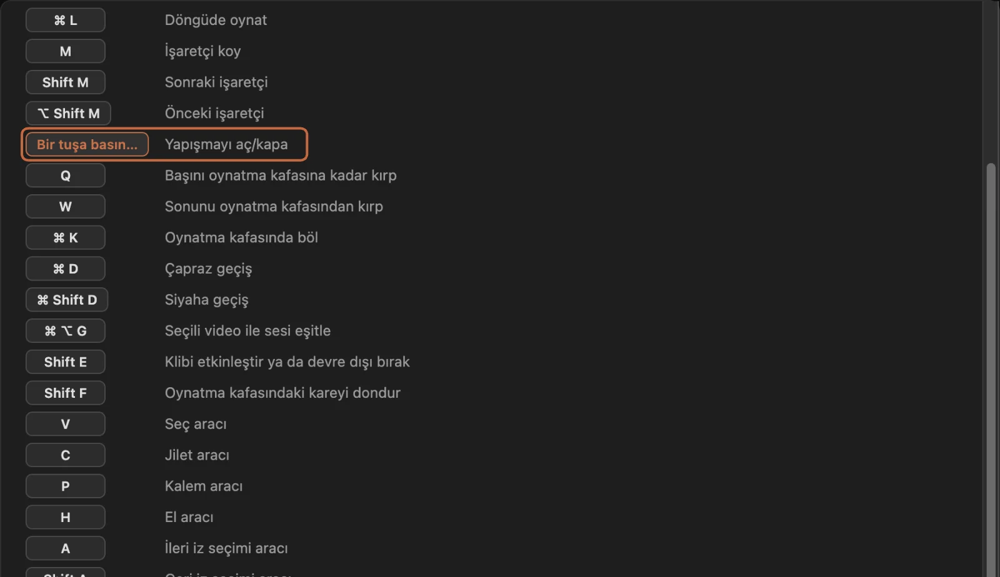

Klavye kısayolları
Kısayol sayfası için üst çubuktaki Kısayollar'a bas. Her tuş değiştirilebilir; bildiğin programın tuşlarıyla da başlayabilirsin.

Tablo Mac'teki Kilnframe tuşlarını gösterir. Windows ve Linux'ta ⌘ yerine Ctrl, ⌥ yerine Alt.
Oynatma ve gezinme
| Tuş | Ne yapar |
|---|---|
| Boşluk | Oynat / durdur |
| J K L | Geri, durdur, oynat (yeniden: 2x, 4x) |
| ← → | Bir kare geri / ileri |
| ⌘ L | In ile Out arasını döngüde oynat |
| ⇧ M | Sonraki işaretçi |
| 1 2 3… | Çoklu kamera: o kameraya ya da kişiye geç; 0 geniş çekim |
İşaretleme
| Tuş | Ne yapar |
|---|---|
| I O | In / Out koy |
| X | Seçili klibin başına ve sonuna In ve Out |
| M | Oynatma kafasına işaretçi |
Düzenleme
| Tuş | Ne yapar |
|---|---|
| V C P H | Seç, Jilet, Kalem, El |
| R T Y A ⇧ T | Hız, Birleşimi kaydır, İçeriği kaydır, İleri İz Seçimi, Yazı |
| ⌘ K | Oynatma kafasından böl |
| Q W | Parçayı oynatma kafasına kadar kırp (baş / son) |
| ⌘ D, ⇧ ⌘ D | Çapraz geçiş, siyaha geçiş |
| ⇧ F | Oynatma kafasındaki kareyi dondur |
| ⇧ E | Seçili klipleri kapat ya da aç |
| ⌥ ⌘ G | Seçili video ve sesi eşitle |
| ⌥ ⌘ ← ⌥ ⌘ → | Parçayı öne / arkaya taşı |
| ⌘ Z, ⇧ ⌘ Z | Geri al, ileri al |
Görünüm
| Tuş | Ne yapar |
|---|---|
| = - \ | Timeline'ı yakınlaştır, uzaklaştır, videonun tamamını sığdır |
| N | Yapışmayı aç / kapa |
| ⇧ S | Oynatma kafası sürüklenirken ses |
| ⌘ ' | Kılavuzları aç / kapa |
| ⇧ D, ⇧ W | Önce, bölünmüş görünüm |
| ⇧ ⌘ F | Görüntüyü tam ekran yap |
| ⇧ K, ⇧ V | Anahtar kare şeritleri, çoklu kamera açıları |
| ⌘ F | Transkriptte ara |
| ⇧ ⌘ E | Kareyi dışa aktar |
Menü çubuğu kendi tuşlarını tutar: ⌘ N Yeni Proje, ⌘ O Aç, ⌘ S Kaydet, ⌘ I Dosya Ekle, ⌘ E Dışa Aktar ve ⌘ , Ayarlar.
Bir tuşu değiştir
- Bir setle başlaBaşlangıç seti: Kilnframe, Premiere Pro, Final Cut Pro, DaVinci Resolve ya da CapCut. Ayarlar › Genel › Alıştığınız program aynısını panellerle birlikte seçer.
- DüzenleKısayolları Düzenle'ye bas, bir kısayola tıkla ve yeni tuşa bas (Bir tuşa basın…). Esc vazgeçer. Tuş başka bir işe aitse o işin artık tuşu olmaz ve sayfa bunu söyler.
- BitirBitti. Varsayılanlara Dön her tuşu geri getirir.
Boşluk, ok tuşları, Delete, kopyala, yapıştır, geri al ve kamera rakamları olduğu gibi kalır; menü çubuğunun tuşları alınamaz.